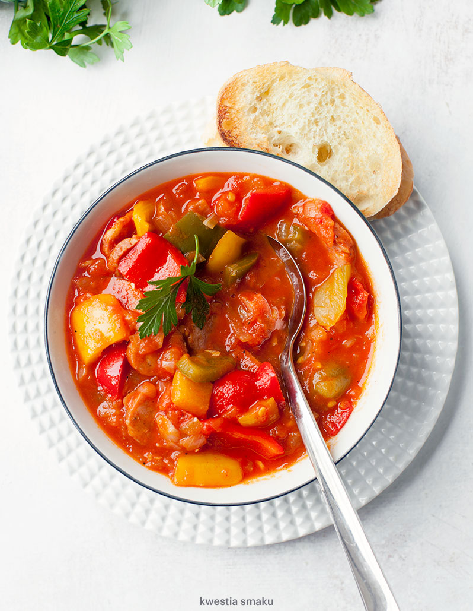

Leczo

Description
Jednogarnkowe danie z papryki, kiełbasy, cebuli i pomidorów.
Ingredients
- 2 lyzki smalcu
- 2 cebule
- 3 papryki
Steps
- Do szerokiego garnka włożyć smalec, dodać pokrojoną w kosteczkę cebulę oraz pokrojoną na plasterki kiełbasę, smażyć co chwilę mieszając przez około 7 minut. Dodać starty na tarce lub rozgnieciony czosnek i smażyć jeszcze przez 3 minuty.
- Dodać pokrojone w kostkę papryki i co chwilę mieszając smażyć przez ok. 3 minuty. Doprawić solą (ok. pół łyżeczki), świeżo zmielonym pieprzem oraz słodką i ostrą papryką w proszku.